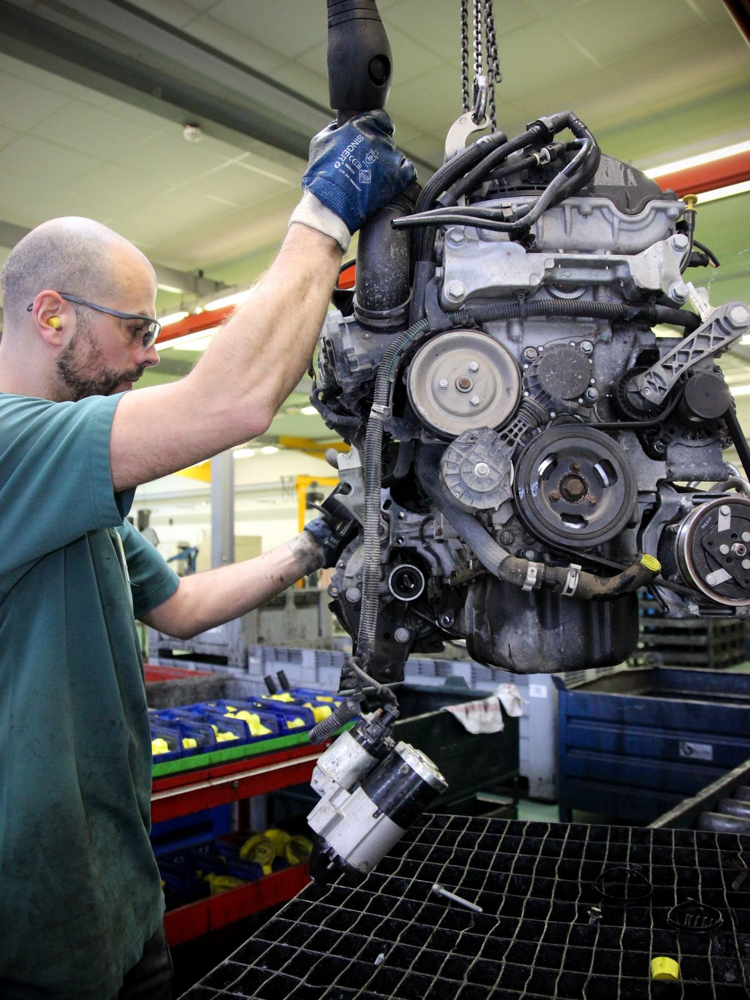
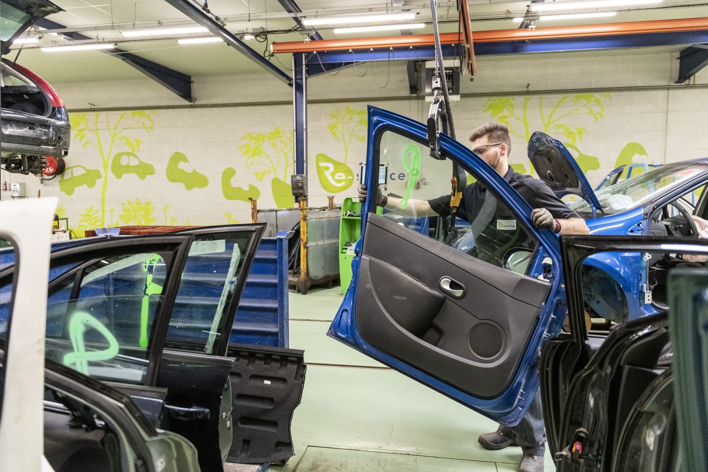
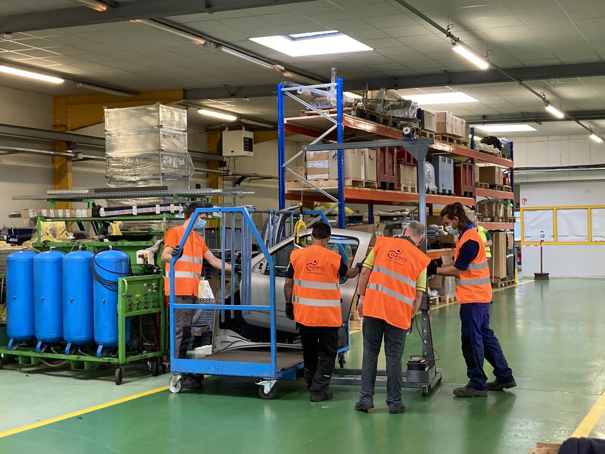
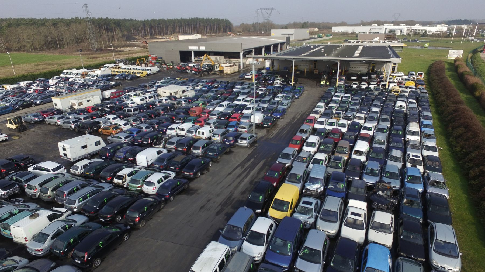

Le réseau est l'actif n° 1 d'INDRA : le premier réseau français de centres VHU agréés, présent dans tous les départements métropolitains et dans cinq départements d'outre-mer, avec près de 40 % de part de marché. Mêmes audits, mêmes formations, mêmes outils, même reporting.
Trouver un centre
Ce qui rend le réseau uniforme
Six mécanismes font qu'un assureur ou un constructeur obtient la même prestation à Forbach, à Colomiers ou à Saint-Denis de La Réunion.
Aucun centre n'entre dans le réseau sans agrément VHU en cours de validité : surfaces étanches, traitement des eaux, installation de dépollution, système informatique relié au SIV.
Des conseillers INDRA visitent chaque centre : audit qualité, sécurité et environnement, conseil, plan de progrès, vérification des habilitations et du reporting.
Le seul centre de formation dédié aux métiers VHU forme les équipes du réseau : dépollution, véhicules électriques, réglementation, pièces de réemploi, sécurité. 967 stagiaires en 2025.
Switch-Car pour les flux de véhicules, Precis et Opisto pour les pièces, SIRA pour les assureurs, portail CVHU pour les systèmes individuels, et demain un DMS commun avec Opisto.
Le process INDRA en cinq étapes, 25 véhicules par jour et par équipe, des équipements Re-source Engineering Solutions : le même geste, la même sécurité, partout.
Déclarations ADEME, indicateurs TRR/TRV/réemploi, délais, certificats : les données remontent, sont consolidées et publiées. Le réseau se pilote avec des chiffres.

Site INDRA · démontage mécaniqueRejoindre le réseau
Un centre membre, vu de l'intérieur

Chaque centre du réseau applique les mêmes standards, utilise les mêmes outils et remonte les mêmes indicateurs. C'est ce qui permet à un assureur national de confier ses sinistres sans distinction de département.
Voir le centre sur la carteL'animation du réseau
Les réunions régionales rassemblent les dirigeants des centres membres autour des résultats de l'année, des évolutions réglementaires, des nouveaux outils et des retours d'expérience. Entre deux réunions, les conseillers réseau restent l'interlocuteur quotidien de chaque centre.
réunions régionales réservées au réseau chaque année
conseiller réseau référent par centre
modules de formation AURECA accessibles aux membres

Au-delà de la France
Le département ingénierie et consulting d'INDRA a accompagné plus de 1 000 centres en France et en Europe, installé des unités de déconstruction clé en main et organisé la filière VHU d'un État.
Avec Opisto (47 %), Pollini Group en Italie et les entités de The Future Is NEUTRAL, INDRA affiche l'ambition de devenir la référence européenne du démantèlement et de la distribution de pièces de réemploi.

Le réseau en un rendez-vous
Assureur ou constructeur, nous superposons vos volumes par département au réseau INDRA et vous montrons, centre par centre, qui prendra en charge vos véhicules.